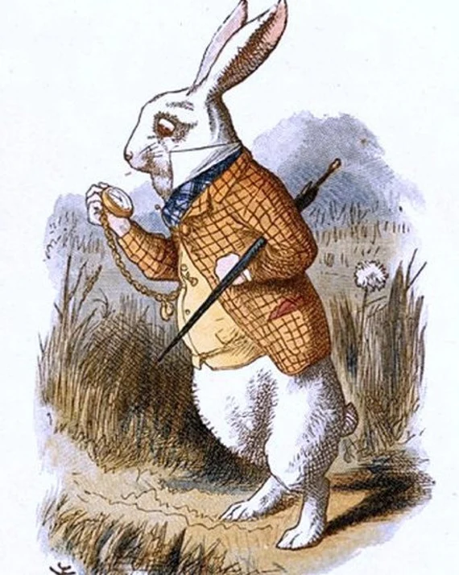

About The White Rabbit
The White Rabbit is the character who sets off the whole story, it's never explained why he's in the 'real world'. He has a house in wonderland and a maid called Mary Ann. He works as the herald for the King and Queen and also helping with the final court scene where he keeps everyone on track. He is described as having pink eyes and wearing a wasitcoat with a pocket watch in it. He spends the first half of story in a rush and in anxiety about it, and the second half trying not to upset the queen and being in anxiety about it.
John Tenniel's original White Rabbit illustration.
My opinion on The White Rabbit
I don't know if the White Rabbit is having a bad day but if you work for a queen who is known for chopping off people's heads you should probably manage your time better. He seems to treat his maid rudely when he yells angrily at Alice (assuming she is Mary Ann) to 'Run home this moment, and fetch me a pair of gloves and a fan! Quick, now!'. He then refuses to go down his own chimney when Alice grows big and forces Bill to do it instead. He has a brief conversation with Alice at the croquet match where he seems polite, if not still anxious, which is fair as the Red Queen is right there.